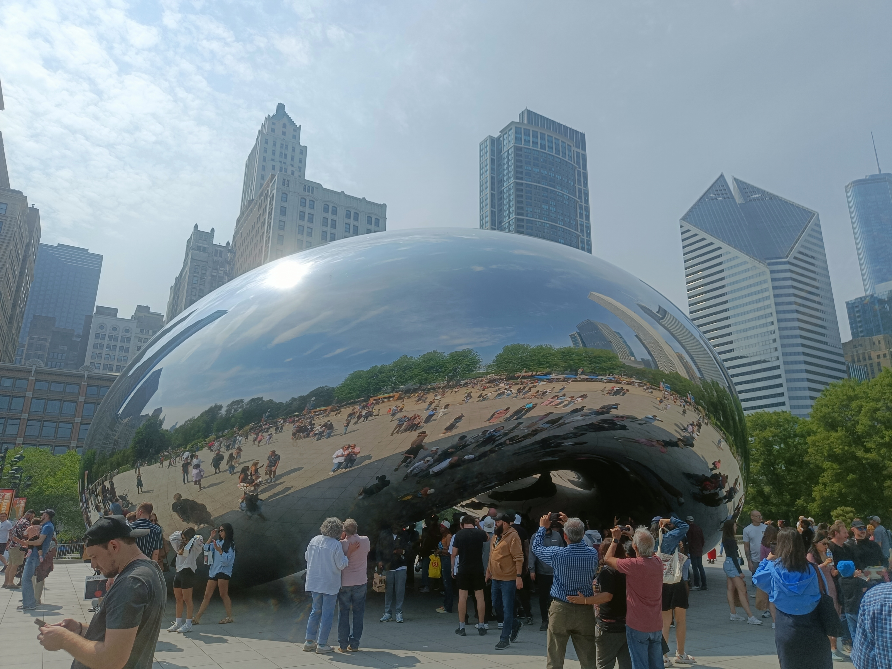

Chapter four
Places.
Travel is how I reset. Every place has left a different kind of residue — a way of thinking, a perspective impossible to get from a screen.



Bengaluru, India · Senior Engineer · Agentic AI Explorer
Chapter one
I write code the same way I think — in systems.
But I've also spent too many nights staring at the sky, wondering if the universe is just a really well-architected distributed system with no documentation.
That curiosity — about scale, emergence, and things that shouldn't be possible but are — is what drives me both at work and outside of it.
MTech in Data Science from BITS Pilani. Currently at Roku building e-commerce infrastructure and chasing agentic AI. Pursuing an MBA in AI for Business on the side. Always reading. Occasionally travelling. Perpetually curious.
Chapter two
I started as an intern writing APIs at a fast-paced startup and grew into someone who designs the systems those APIs live inside. Each move was deliberate. Always toward more complexity, more ownership, and more interesting problems.
Intern to Senior Engineer, all at one place. APIs, legacy migration, multithreaded performance work — the full foundation.
Data engineering at a cloud broadcast platform. Kafka, Flink, and real-time pipelines became a lens for every large-scale system problem.
Microservices architecture, system design, and fast iteration — a year's worth of instincts in ten months.
End-to-end ownership of the e-commerce platform. Spring Boot, Spring Reactive, React — and asking what parts can start making decisions on their own.
Chapter three
Tools aren't the story — they're how the story gets told. These are the ones I've learned to trust under pressure.
Chapter four
Travel is how I reset. Every place has left a different kind of residue — a way of thinking, a perspective impossible to get from a screen.

Chapter five
I've been fascinated by astrophysics for as long as I've been interested in computers. There's something deeply satisfying about systems that work at cosmological scale — no central authority, no single point of failure, just physics doing its thing across billions of light years.
I think that's secretly why distributed systems appeal to me. And why agentic AI feels like the next frontier worth chasing — it's the question of how you build something that acts intelligently without being told exactly what to do. Turns out the universe figured that one out a long time ago.
Chapter six
I'm always up for a good conversation — about systems, AI, astrophysics, or anything that shouldn't exist yet but will.
Software, astrophysics, evolution, history — when these worlds collide, the debris eventually settles into something new.
That's what you've been watching in the background. Two galaxies — my interests — spiralling into each other, scattering stars, and slowly forming one.
That's me.